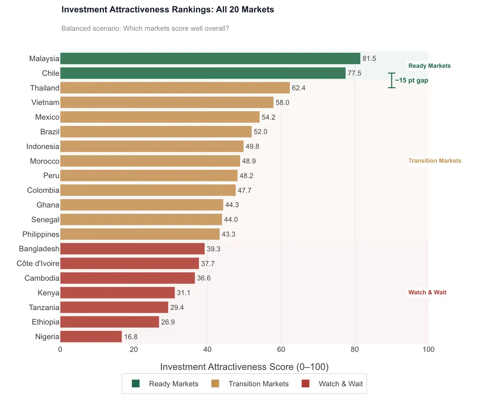
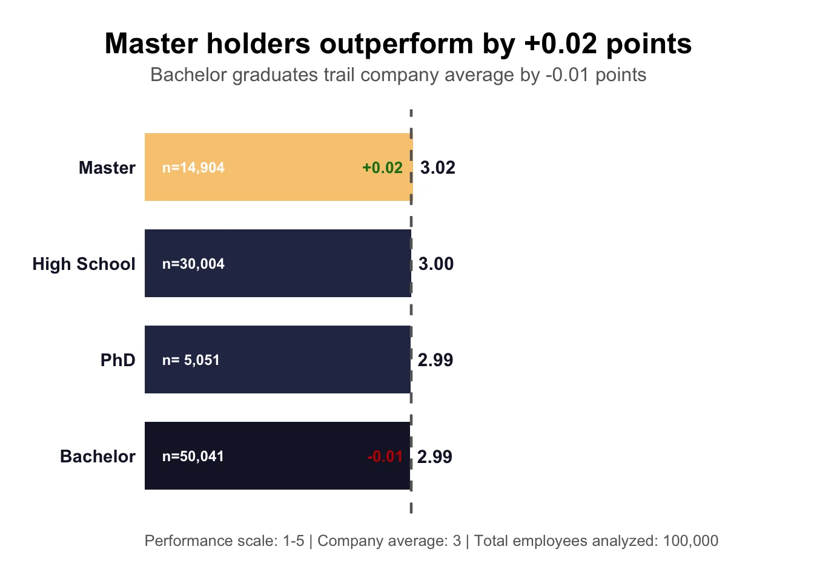
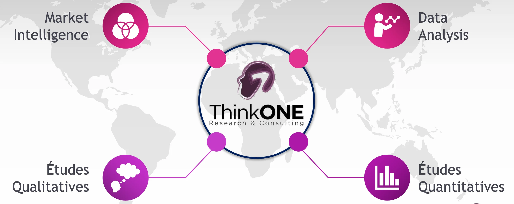

I help organizations turn complex data into clear insights leaders can act on, confidently.
I'm an Independent Consultant specializing in Data Analytics and Decision Support. I help companies strategically leverage their data.
As an Operations Research and Decision Support Engineer and McKinsey.org Forward certified, I translate analytical complexity into actionable insights. My approach combines scientific rigor, business acumen, and the ability to communicate effectively to maximize the impact of your data investments.
Click any project to read the full case study, tools used, key outcomes, and links to GitHub or live application.

Quantitative market prioritization framework for renewable energy investment. 20 markets scored across 4 dimensions, 4 investor scenarios tested.

Thematic EDA across 100,000 employee records uncovering drivers of turnover, performance, and compensation equity.
Time series analysis leveraging ARCH/GARCH models for volatility patterns. 97–99% accuracy using XGBoost and LSTM across 14 market variables.
Cross-border feasibility and scenario analysis for large-scale infrastructure investment with SOGEPA SARL and JTP Transport.

Consumer sentiment analysis and facial coding pipeline for emotional response measurement beyond traditional survey data.
Fine-tuned on real coursework, no hallucinations 😁. Click any certificate title to view image and verify credentials. Filter by issuer or credential level using the tabs.
What I actually deliver.
I help analysts, consultants, and organizations turn their work into something people actually see. Clean design, reproducible reports, live portfolios — built with Quarto, deployed for free.
A Quarto portfolio website built and deployed: clean visual structure, GitHub integration, and full ownership of the code.
You build the report. I show you exactly how: structure, Quarto, publishing. You finish with a live project report and the skills to build the next one alone.
Whether you have a scoped brief or are still in exploratory mode, reach out.